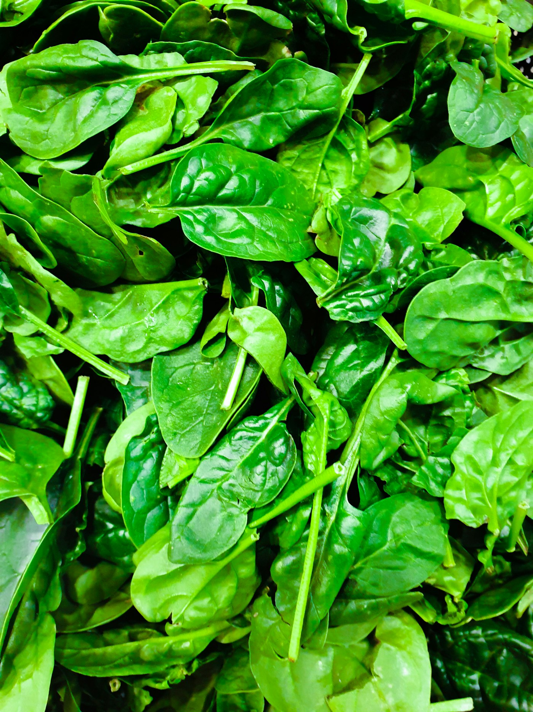
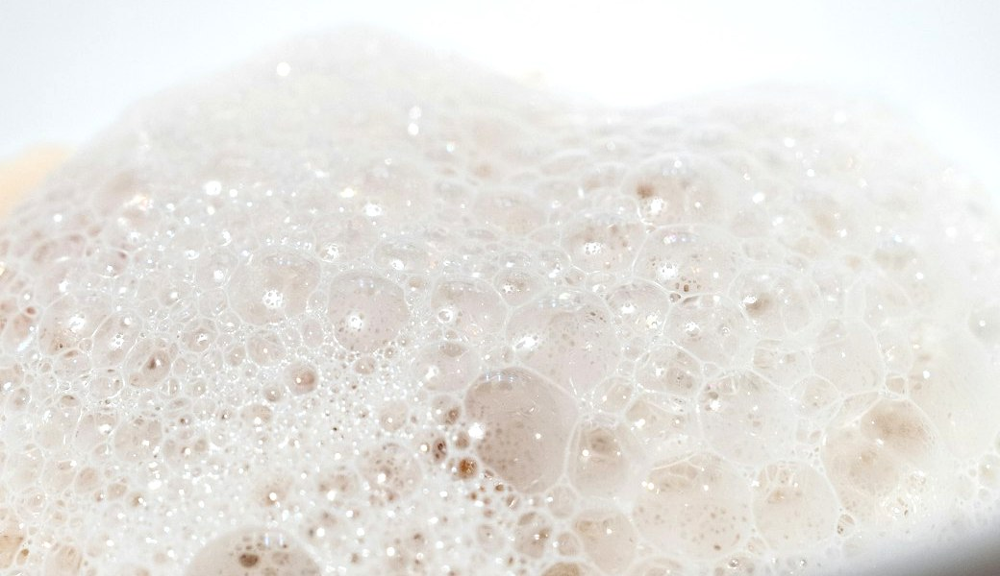
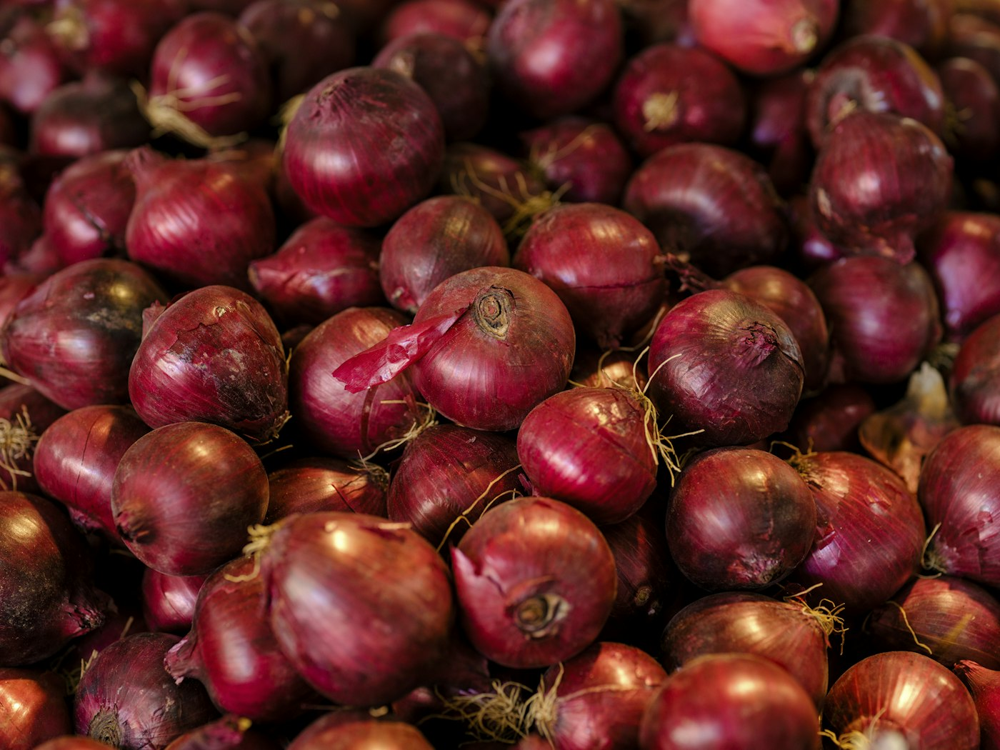
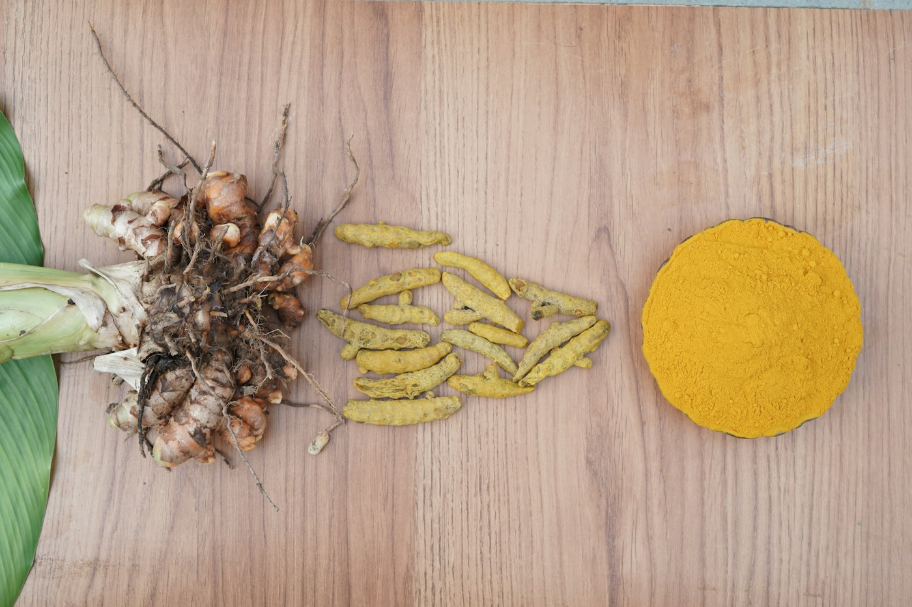
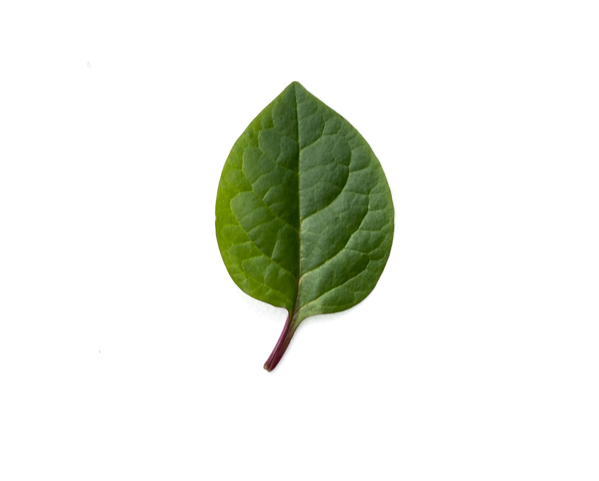
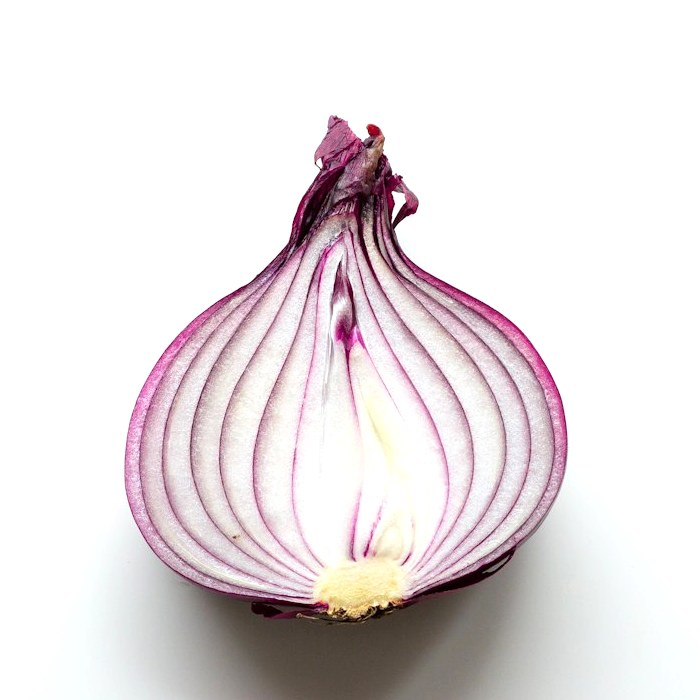
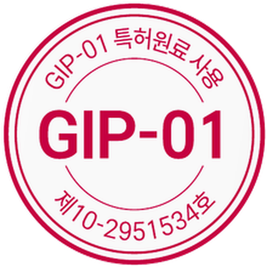
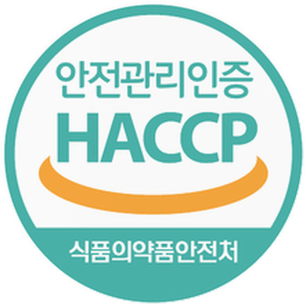
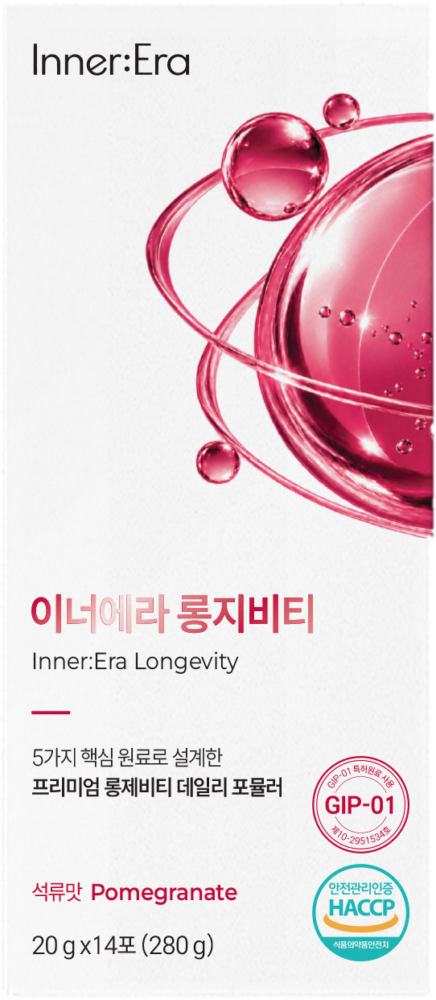
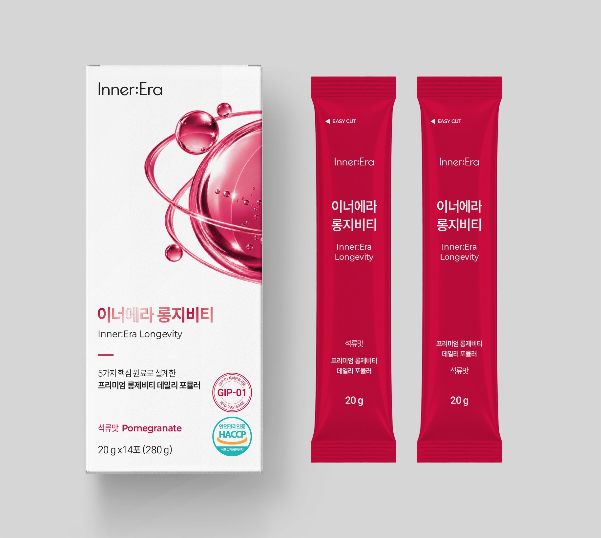

나를 위한 관리를 시작하고 싶지만, 어디서부터 무엇을 챙겨야 할지 막막한 분좋다는 건 많지만 무엇을 선택해야 할지 고민이라면, 나에게 필요한 데일리 루틴부터 시작해 보세요.
02
끝없는 육아와 바쁜 일상 속에서 정작 나 자신을 돌볼 여유가 없는 분가족과 일상을 챙기느라 미뤄왔던 나를 위한 시간, 이제는 매일 간편하게 챙겨보세요.
03
반복되는 야근과 불규칙한 생활로 일상의 생기가 부족하다고 느끼는 분바쁜 하루에도 나를 위한 작은 습관 하나쯤은 놓치고 싶지 않은 분.
04
예전과 달라진 피부 컨디션과 생기를 세심하게 관리하고 싶은 분겉으로 보이는 아름다움뿐 아니라 매일의 이너뷰티 루틴까지 생각하는 분.
05
지금부터 꾸준히 나이 들어가는 과정을 관리하고 싶은 분더 늦기 전에 나만의 롱제비티 라이프스타일을 시작하고, 오늘보다 건강한 내일을 준비하고 싶은 분.
복잡하게 여러 가지를 챙기기보다, 다섯 가지 핵심 원료를 하루 한 포로.
연구 논문으로 살펴본
다섯 가지 핵심 원료
100,00010,000
180,343편
33,390편
28,845편
7,399편
1,548편
글루타치온
퀘르세틴
커큐민
알파리포산
NMN
PubMed에서 제목·초록에 원료 이름이 들어간 논문은 다섯 원료를 합쳐 25만 편이 넘습니다. 이너에라는 이 다섯 가지를 한 포에 담았습니다.
*출처 : PubMed 제목·초록 검색 기준, 2026년 10월 (세로축은 로그 눈금, 바닥선 1,000편) *상기 내용은 제품이 아닌 원료에 대한 정보입니다.
INGREDIENT STORY
한 포 안에 다섯 가지.
따로 챙기던 원료를, 하루 한 포로. 원료 하나하나가 어떤 성분인지 살펴봅니다.
01알파리포산02글루타치온03NMN04퀘르세틴05커큐민

INGREDIENT 01
알파리포산
Alpha-Lipoic Acid
시금치·브로콜리에 미량 들어 있는, 황 원자 두 개가 고리를 이룬 지방산 유래 성분
몸속 에너지를 만드는 미토콘드리아 효소의 보조 인자로 알려져, 에너지 대사 연구에서 꾸준히 다뤄지는 원료입니다.
이런 분께
나를 챙기고 싶은데 어디서부터 해야 할지 모르는 분
끝없는 육아로 나를 챙길 틈이 없는 분
만성 야근으로 지친 일상을 보내는 분
속부터 맑은 하루를 시작하고 싶은 분
나만의 데일리 루틴을 만들고 싶은 분
분자식C8H14O2S2
분자량206.3
PubMed 논문 수7,399편
*분자식·분자량 : PubChem / 논문 수 : PubMed 제목·초록 검색 기준, 2026년 10월 *상기 내용은 제품이 아닌 원료에 대한 정보입니다.

INGREDIENT 02
글루타치온
Glutathione
글루탐산·시스테인·글리신, 세 가지 아미노산이 이어진 트리펩타이드 (효모 등에서 얻음)
맑은 컨디션을 챙기는 이너뷰티 루틴의 대표 원료. 다섯 원료 가운데 가장 많이 연구된 성분으로, PubMed 논문만 18만 편이 넘습니다.
이런 분께
예전과 달라진 피부 컨디션을 세심하게 챙기고 싶은 분
분자식C10H17N3O6S
분자량307.33
PubMed 논문 수180,343편
*분자식·분자량 : PubChem / 논문 수 : PubMed 제목·초록 검색 기준, 2026년 10월 *상기 내용은 제품이 아닌 원료에 대한 정보입니다.
INGREDIENT 03
비타민 B3 계열에서 만들어지는
NAD+의 전구체로 연구되는 성분
NMN
NMN은 어떤 성분일까요?
비타민 B3 (나이아신)
비타민 B3 계열
NMN · C11H15N2O8P 분자량 334.22
NAD+
NMN은 NAD+의 전구체로 연구됨
NMN은 니코틴아마이드 모노뉴클레오타이드의 줄임말로, 비타민 B3 계열에서 만들어지는 뉴클레오타이드입니다. 브로콜리·에다마메·아보카도 등에 미량 들어 있습니다.
효모 발효 유래이너에라의 NMN은 합성이 아닌 효모 발효로 얻은 원료입니다.해외 웰니스 시장에서 먼저 주목받은 저속노화 라이프의 키워드.
이런 분께
“아침이 무겁게 느껴지는 날이 늘었나요?”
나이 들수록 더 세심하게 챙기고 싶은 분
더 늦기 전에 나만의 루틴을 시작하고 싶은 분
하루 한 포로 시작하는 저속노화 라이프
분자식C11H15N2O8P
분자량334.22
PubMed 논문 수1,548편
*분자식·분자량 : PubChem / 논문 수 : PubMed 제목·초록 검색 기준, 2026년 10월 *상기 내용은 제품이 아닌 원료에 대한 정보입니다.

INGREDIENT 04
퀘르세틴
Quercetin
양파 껍질·사과·케이퍼에 들어 있는 식물 유래 플라보노이드 (phytochemical)
식물이 스스로를 지키기 위해 만드는 색소 성분으로, 항산화 연구에서 자주 다뤄지는 원료입니다.
이런 분께
지금은 괜찮아 보여도, 계절이 바뀔 때마다 컨디션을 세심하게 챙기고 싶은 분
분자식C15H10O7
분자량302.23
PubMed 논문 수33,390편
*분자식·분자량 : PubChem / 논문 수 : PubMed 제목·초록 검색 기준, 2026년 10월 *상기 내용은 제품이 아닌 원료에 대한 정보입니다.

INGREDIENT 05
커큐민
Curcumin
강황의 노란색을 내는 주요 성분 (폴리페놀)
오래전부터 음식에 쓰여 온 강황 속 성분으로, 다양한 연구에서 주목받고 있는 원료입니다.
분자식C21H20O6
분자량368.4
PubMed 논문 수28,845편
*분자식·분자량 : PubChem / 논문 수 : PubMed 제목·초록 검색 기준, 2026년 10월 *상기 내용은 제품이 아닌 원료에 대한 정보입니다.
Inner:Era 한 포에 담은
다섯 가지 핵심 원료 배합을 확인하세요.
Alpha-Lipoic Acid알파리포산시금치·브로콜리
Glutathione글루타치온효모
Curcumin커큐민강황 뿌리줄기
Quercetin퀘르세틴양파 껍질·사과
Nicotinamide MononucleotideNMN브로콜리·에다마메
이너에라 한 포 속 다섯 가지 원료

알파리포산글루타치온커큐민

퀘르세틴NMN
알파리포산 · 글루타치온 · 커큐민 · 퀘르세틴 · NMN, 따로 챙길 필요 없이 하루 한 포로 간편하게.
*원료가 자연에서 발견되는 대표 식품을 소개한 것으로, 제품 원료의 원산지를 뜻하지 않습니다. *상기 내용은 제품이 아닌 원료에 대한 정보입니다.
한눈에 비교하는
5가지 핵심 원료
알파리포산ALA
글루타치온Glutathione
커큐민Curcumin
퀘르세틴Quercetin
NMNNicotinamide Mononucleotide
분자식
C8H14O2S2
C10H17N3O6S
C21H20O6
C15H10O7
C11H15N2O8P
분자량
206.3
307.33
368.4
302.23
334.22
분류
황 고리 지방산
트리펩타이드
폴리페놀
플라보놀
뉴클레오타이드
자연 속 유래
시금치· 브로콜리
효모
강황 뿌리줄기
양파 껍질· 사과·케이퍼
브로콜리· 에다마메·아보카도
PubMed 논문 수
7,399편
180,343편
28,845편
33,390편
1,548편
*분자식·분자량 : PubChem / 논문 수 : PubMed 제목·초록 검색 기준, 2026년 10월 *상기 내용은 제품이 아닌 원료에 대한 정보입니다.
Inner:Era 한 포에 들어간
ORIGIN
자연 속 어디에서 왔을까?
강황 뿌리줄기 · 커큐민
28,845편
커큐민 PubMed 논문 수
양파 껍질 · 퀘르세틴
33,390편
퀘르세틴 PubMed 논문 수
시금치 · 알파리포산
7,399편
알파리포산 PubMed 논문 수
*논문 수 : PubMed 제목·초록 검색 기준, 2026년 10월 *원료가 자연에서 발견되는 대표 식품을 소개한 것으로, 제품 원료의 원산지를 뜻하지 않습니다. *커큐민은 강황의 노란 색소 성분, 퀘르세틴은 양파 껍질·사과 등의 플라보놀, 알파리포산은 시금치·브로콜리 등에 미량 들어 있습니다. *상기 내용은 제품이 아닌 원료에 대한 정보입니다.
PATENTED INGREDIENT
퀘르세틴을 핵심으로 설계한 특허 복합 원료, GIP-01

특허 번호제10-2951534호
출원일
2025년 11월 4일
등록일
2026년 4월 7일
원료 검사 서류상 원료명회화나무 추출물(퀘르세틴)SOPHORA JAPONICA EXTRACT (QUERCETIN)
원료 수입 단계부터, 서류로 확인한 원료
공인 시험기관의 검사를 거쳐 다섯 항목 모두 ‘적합’ 판정을 받았습니다.
건조감량적합
함량적합
확인시험적합
납적합
비소적합
품질과 규격을 확인한 서류
시험성적서수입신고필증수입식품 신고확인증
*상기 내용은 제품이 아닌 원료에 대한 정보입니다.
OUR PRINCIPLES
매일 먹는 것이니까, 이너에라가 지키는 원칙

HACCP 안전관리인증식품의약품안전처
원칙 하나인증받은 곳에서 만듭니다HACCP 안전관리인증을 받은 제조시설에서 만듭니다.
원칙 둘원료 이름을 숨기지 않습니다다섯 가지 핵심 원료의 이름을 패키지에 그대로 적었습니다.
원칙 셋매일 먹을 수 있는 맛으로 만듭니다꾸준히 이어갈 수 있도록 석류맛 젤리스틱으로 만들었습니다.
원칙 넷한 포씩 따로 담았습니다1포 20 g, EASY CUT 스틱에 한 포씩 개별 포장했습니다.
간편하게 챙기는 데일리 리추얼
Inner:Era
5가지 핵심 원료로 설계한 데일리 포뮬러

매일 한 포로 챙기는 이너에라 롱지비티
한눈에 보는 제품 정보
석류맛Pomegranate
매일 부담 없이 즐길 수 있는 석류맛 젤리스틱입니다. 스틱 상단의 EASY CUT으로 간편하게 개봉해 언제 어디서나 한 포씩 즐길 수 있습니다.

20 g × 14포총 280 g
1포 20 g 젤리스틱 14포가 한 상자에 들어 있습니다. 스틱마다 EASY CUT 표시가 있습니다.